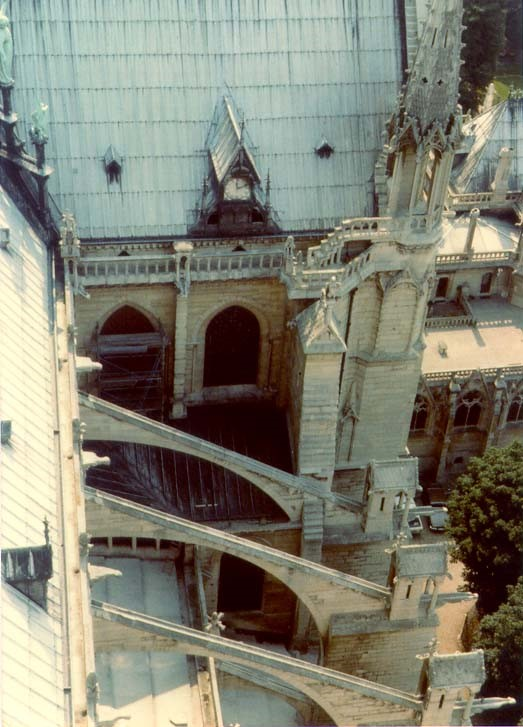
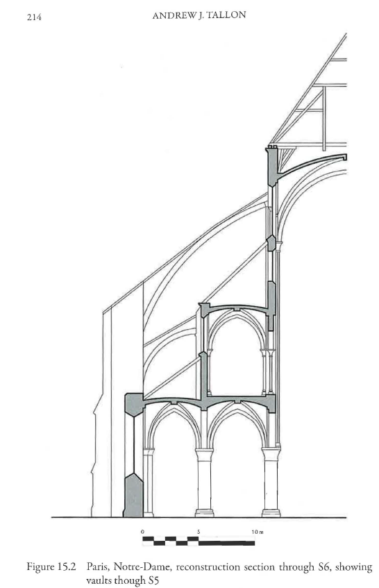
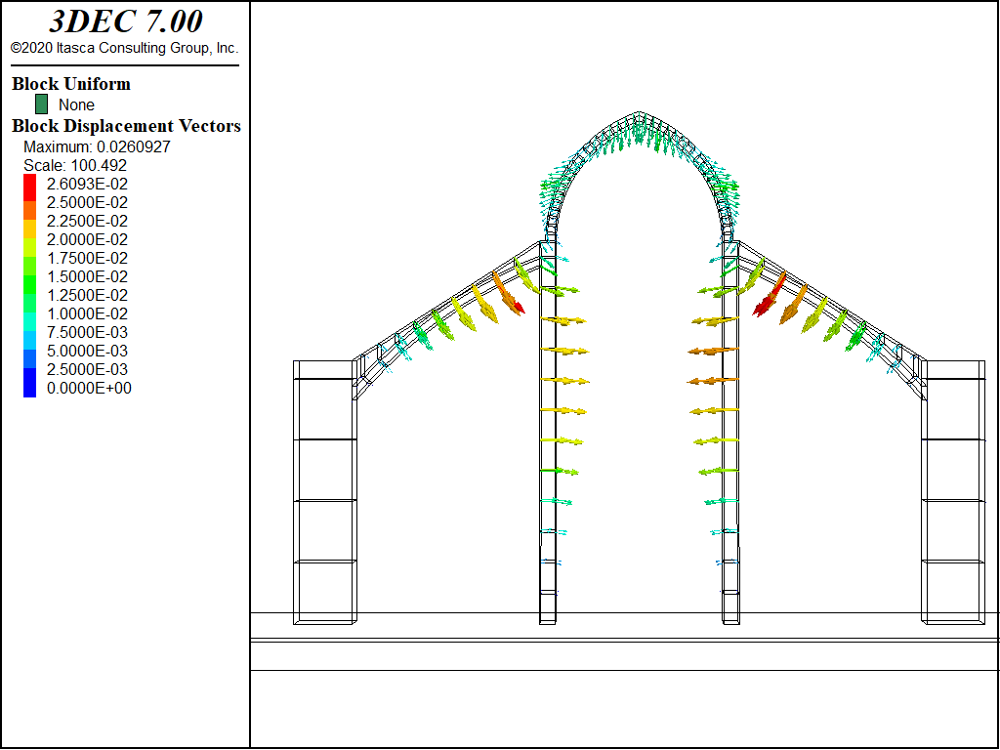
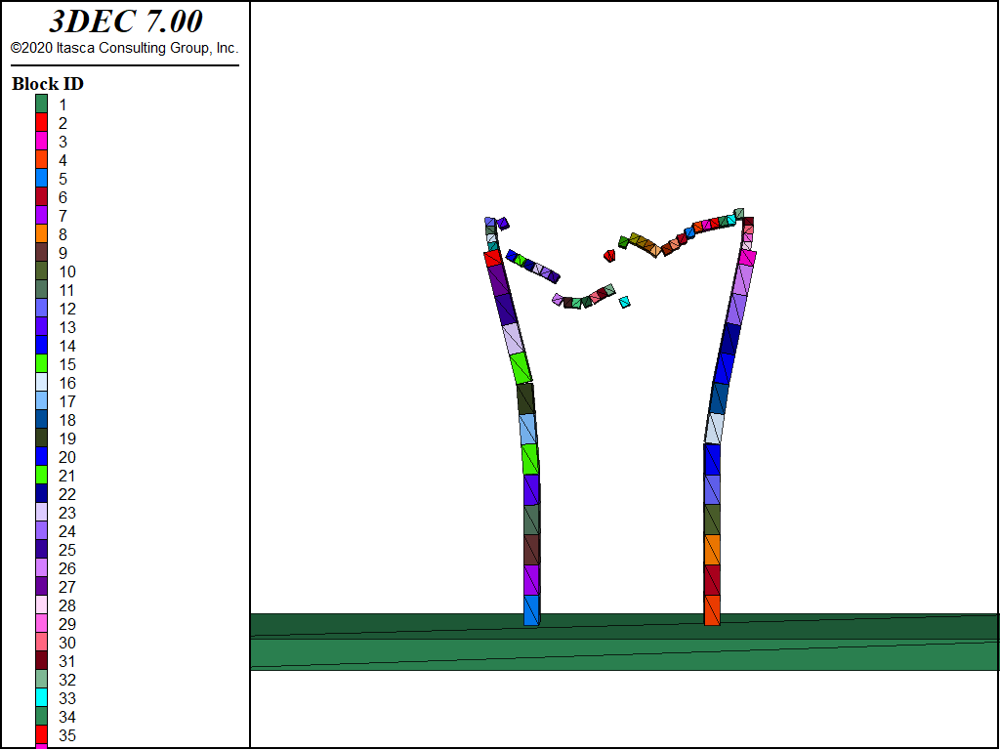

飞扶壁
问题描述
注意
要在 3DEC 中查看此项目，请使用菜单命令 。选择“3DEC/ ExampleApplications/ Buttress”，然后选择“buttress.prj”进行加载。所用的主数据文件（main data files）显示在本示例的末尾。所有数据文件都可在该项目中找到。
问题描述
飞扶壁是扶壁的一种特殊形式，由拱形结构组成，该结构从墙体的上部延伸至大质量的墩体，以便将把墙体向外推的水平力传递至地面；这些力产生于石质拱形顶棚以及屋面上的风荷载 [1]。
巴黎圣母院（法国巴黎）的飞扶壁如图 1（Figure 1）所示，其示意性横剖面如图 2（Figure 2）所示。巴黎圣母院最初的设计中并未包含飞扶壁。但在大教堂开始建造之后，更薄的墙体（哥特式风格所推崇）越建越高，随着墙体向外推挤，开始出现应力裂缝。大教堂的建筑师为解决这一问题，在外墙周围修建了支撑结构，后来的扩建也延续了这一做法。巴黎圣母院是世界上最早使用飞扶壁的建筑之一 [2]。


图 1：巴黎圣母院的扶壁。


图 2：巴黎圣母院飞扶壁的横剖面 [3]。
3DEC 模型
构建了一组扶壁的 3DEC 模型。扶壁建模为 1 m 厚的块体（约等于真实厚度）。顶部的哥特式拱也建模为一组 1 m 厚的块体。实际上，拱顶在平面外方向是连续的。因此，为了考虑拱作用于扶壁的总重量，将其重量（密度）乘以 6 m（即开间间距），以便对柱子施加正确的外推力。拱的跨度约为 11 m，高度为 34 m。图 3（Figure 3）所示的 3DEC 模型显然代表简化的几何形状（可与图 1（Figure 1）和图 2（Figure 2）对比）。

本示例展示了两种不同的模型构建方式：（1）使用 FISH 函数定义块体几何；（2）使用在 Rhino 中创建的 VRML 文件定义块体几何。采用方法（2）时，使用命令 :cmd`block.generate.from-vrml` 创建块体。
块体密度设为 2500 kg/m^3。如上所述，拱的密度设为此值的六倍（15,000 kg/m^3）。节理摩擦角设为 35^{circ}，但柱子与扶壁之间的节理除外，这些节理赋予无限强度（弹性）。
求解与结果
模型配置为动态模式，以确保准确计算块体的惯性矩。然而，由于只需要静态解，动态计算设置为关闭（将采用高阻尼）。打开重力，含扶壁的模型求解至平衡。位移如图 4（Figure 4）所示。随后在无扶壁的情况下运行同一模型。由于明显发生倒塌，模型在 20,000 步后停止。破坏的演化过程如图 5（Figure 5）所示。


图 4：扶壁中的位移


图 5：无扶壁时的块体。
参考文献
[1] A Dictionary of Architecture, James Stevens Curls, Editor. 1999:Oxford. pp. 113–114.
[2] http://www.notredamecathedralparis.com/
[3] Tallon, A.J., 2011. “Rethinking medieval structure,” in New Approaches to Medieval Architecture, R.O. Bork, W. W. Clark, A. McGehee (eds.), Routledge.
数据文件
make_buttress_fish.dat
model new
model configure dynamic
model large-strain on
;
;
; 方法 A
;
;
; 底座
block create brick -30 30 -3 3 -2 0
;
; 外侧支柱
block create brick -6.5 -5.5 0 1 0 25
block create brick 5.5 6.5 0 1 0 25
;
block hide range position-z -2 0
block cut joint-set dip 0 dip-direction 0 spacing 2 number 25
block hide off
;
program call 'make_buttress.fis'
[arch]
[arcob]
;
;
; 外侧支柱
block create brick [xaext] [xa] 0 1 0 [zat]
block create brick [xaa] [xaaext] 0 1 0 [zat]
;
block hide range position-x [xa] [xaa]
block cut joint-set dip 0 dip-direction 0 spacing 4 number 20
block hide off
model save 'blocks'
make_buttress_vrml.dat
model new
model configure dynamic
model large-strain on
block generate from-vrml file 'buttress.wrl'
model save 'blocks'
buttress.dat
model restore 'blocks'
;
; 块体参数，应力单位为 MPa
;
; 支柱与底座
block property density 0.0025
;
; 拱
block property density 0.015 range position-z 25 35
;
;节理
block contact generate-subcontacts
block contact jmodel assign mohr
block contact property stiffness-normal 10000 stiffness-shear 5000 fric 35
block contact material-table default property stiffness-normal 10000 ...
stiffness-shear 5000 friction 35
;
; 软化并黏结支柱与扶壁之间的节理
;
block contact prop stiff-norm 1000 stiff-shear 500 cohesion 1e9 tension 1e9 ...
range plane dip 90 dip-direction 90 origin -6.5 0.5 24.5 distance 0.01
block contact prop stiff-norm 1000 stiff-shear 500 cohesion 1e9 tension 1e9 ...
range plane dip 90 dip-direction 90 origin 6.5 0.5 24.5 distance 0.01
block contact prop stiff-norm 1000 stiff-shear 500 cohesion 1e9 tension 1e9 ...
range plane dip 90 dip-direction 90 origin -18.7 0.5 16.6 distance 0.01
block contact prop stiff-norm 1000 stiff-shear 500 cohesion 1e9 tension 1e9 ...
range plane dip 90 dip-direction 90 origin 18.7 0.5 16.6 distance 0.01
;
model dynamic active off
;
model gravity 0 0 -10
;
block fix range position-z -2 0
;
block history displacement-x position 0 0 34
block history displacement-y position 0 0 34
block history displacement-z position 0 0 34
block history displacement-x position -6.5 0 25
block history displacement-y position -6.5 0 25
block history displacement-z position -6.5 0 25
;
model save 'buttress-initial'
;
model cycle 20000
model save 'buttress'
;
| 这些内容对您有帮助吗？… 版权与免责声明 |
FLAC3D © 2019, Itasca | 原文更新于 2020 年 10 月 8 日 |